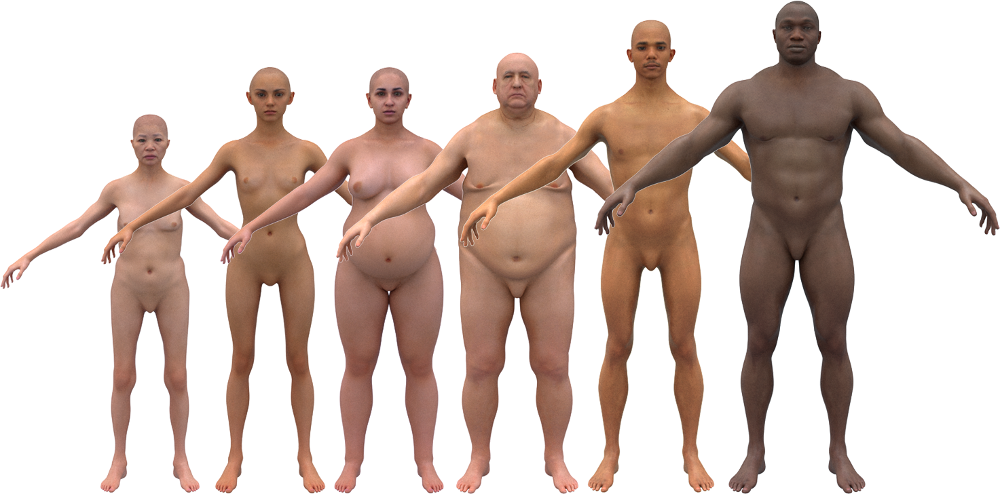
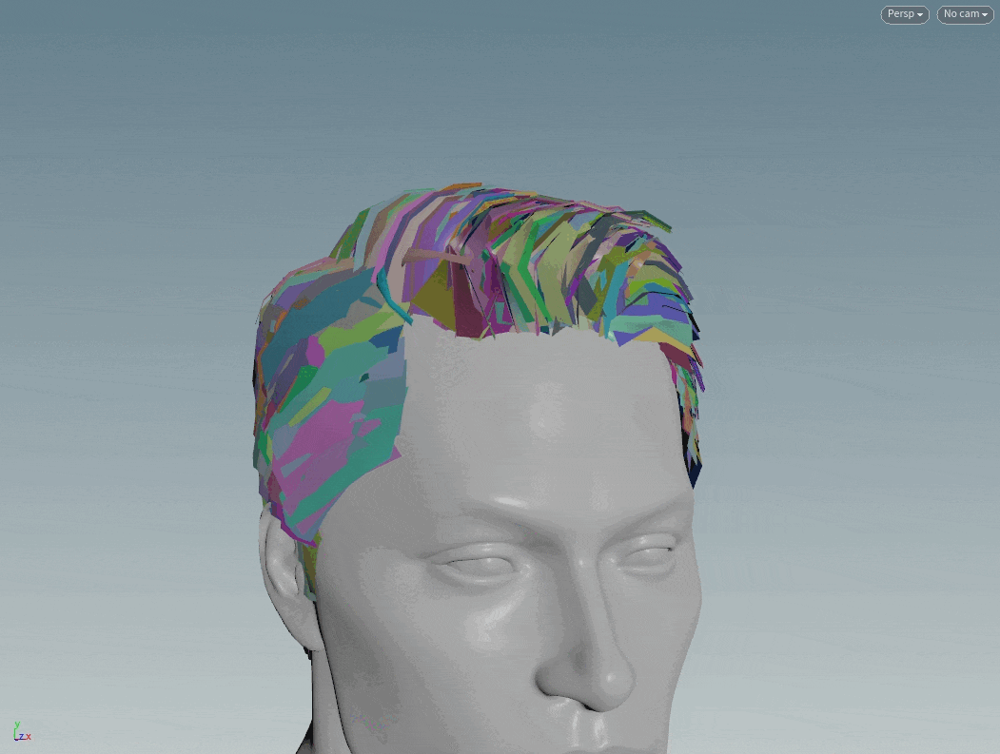

Characters
A suite of procedural systems for generating realistic digital humans — including parameterized body shapes, facial animation capture, hair generation, and hand/arm tracking datasets for computer vision training.

